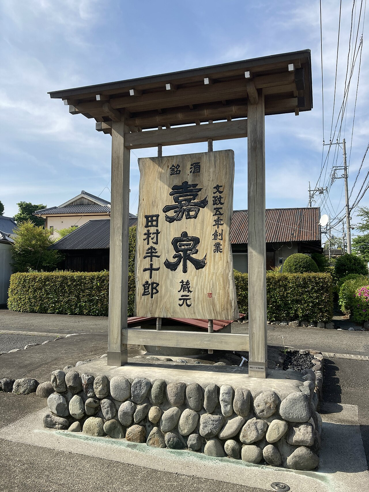
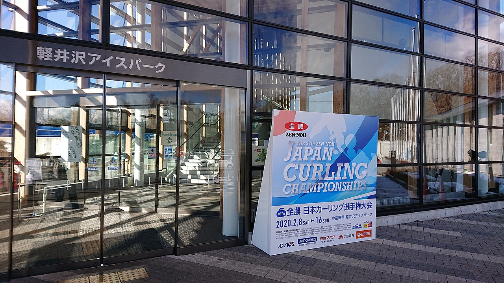

Talking with Staff Using Translation Apps

翻訳アプリでスタッフと会話するコツ
← All articles / 記事一覧へEnglish is taught in Japanese schools, but many shop, restaurant and station staff rarely speak it — especially outside big cities. In the Japan Tourism Agency's FY2025 survey of departing visitors, 15.4% named "communicating with staff" as a trouble during their trip, and 68% of those visitors coped using ICT tools such as translation apps. Showing your phone with a short sentence in Japanese is often clearer than speaking English. Staff are usually glad you made the effort, and many will answer by pointing, nodding, speaking slowly, or typing a reply back into your phone.
日本の学校では英語を習いますが、多くのお店やレストラン、駅のスタッフは英語を話せません。特に大きな都市を離れるとそう傾向が強いです。観光庁の令和7年度調査（出国旅行者 n=4,110）では、旅行中の困りごとの1つに「スタッフとの会話」を挙げた人が15.4%おり、そのうち68%が翻訳アプリなどのICTツールで対応しました。スマホに日本語で短く書いた文を見せるほうが、英語で話すより伝わりやすいことが多いです。 スタッフの多くは、あなたが日本語で伝えようとする姿勢を喜び、指さしやうなづき、ゆっくりとした言葉、あるいはスマホに返事を打ち返してくれることもあります。
1. Prepare before you go 出発前に準備すること
- Install one or two translation apps and test them with simple phrases before you travel. 出発前に翻訳アプリを1〜2本入れ、簡単な文章で試しておきましょう。
- Download the Japanese language pack for offline use while on Wi-Fi — signal can be weak in basements, rural stations and shops. Wi-Fi環境で日本語パックをオフライン用にダウンロードしておくと、地下や地方の駅、お店で電波が弱くても安心です。
- Save screenshots of key phrases (allergies, dietary restrictions, your hotel address) so you can show them without a connection. アレルギーや食事制限、ホテルの住所など、重要なフレーズのスクリーンショットを保存しておくと、接続なしで見せられます。
- Think of what you want to ask before you approach the staff, and write it in short, simple sentences. スタッフに尋ねる前に、何を聞きたいかを短く簡単な文章で考えておきましょう。
出発前に翻訳アプリを1〜2本入れ、簡単な文章で試しておきましょう。Wi-Fi環境で日本語パックをオフライン用にダウンロードしておくと、地下や地方の駅、お店で電波が弱くても安心です。アレルギーや食事制限、ホテルの住所など、重要なフレーズのスクリーンショットを保存しておくと、接続なしで見せられます。スタッフに尋ねる前に、何を聞きたいかを短く簡単な文章で考えておきましょう。

2. How to talk with staff スタッフとの話し方
- Start with a smile, a small bow, and "Sumimasen" (すみません — excuse me). A polite greeting sets a friendly tone. にっこり笑い、小さなお辞儀をして「すみません（Sumimasen）」から始めましょう。丁寧なあいさつがやさしい雰囲気を作ります。
- Show your phone slightly and say "Translation" or "Tsuyaku desu" (通訳です) so they know you are using an app. スマホを少し見せて「通訳です（Tsuyaku desu）」や "Translation" と言うと、翻訳アプリを使っていることが伝わります。
- Keep sentences short and literal. Avoid idioms and slang such as "hit the hay" or "grab a bite." 文は短く、直訳調に。諺や慣用表現（"hit the hay" や "grab a bite" など）は避けましょう。
- In noisy places (stations, food courts, markets), type instead of speaking. Staff can read your screen at their own pace. 駅やフードコート、市場など賑やかな場所では、話すより入力して画面を見せるほうが伝わりやすく、スタッフも自分のペースで読めます。
- Show → wait → listen. After showing the translation, give them time to read and answer. Don't talk while they are reading. 「見せる → 待つ → 聞く」の順で、相手が読んでいる間は話さないでください。
- Use eye contact and gentle gestures. Pointing at a menu item or product is fine in Japan when you ask for help. 目を合わせ、やさしい身振りを添え、メニューや商品を指さすことも構いません。
- If they look confused, rephrase even simpler — for example, change "I'm looking for allergy-friendly food options" to "Do you have food without eggs?" 相手が困った顔なら、もっと簡単に言い換えましょう（例："I'm looking for allergy-friendly food options" → "Do you have food without eggs?"）。
- If staff call another colleague who speaks more English, that is a good sign — they want to help you. 別のスタッフを呼ばれるのは、対応しようとする良い兆候です。
- You may hear "Chotto matte kudasai" (ちょっと待ってください — please wait a moment). It is polite, not a refusal; stay where you are and they will come back to you. 「ちょっと待ってください（Chotto matte kudasai）」は丁寧な「少々お待ちください」であり、断りではありません。その場で待っていれば戻ってきます。
- Don't shout or speak too fast. Slow, clear English or simple keywords ("Toilet?", "Taxi?", "Wi-Fi?") often get through. 大きな声や早口は避け、「トイレ？」「タクシー？」「Wi-Fi？」のような短い単語やゆっくりした英語でも十分に通じることが多いです。
にっこり笑い、小さなお辞儀をして「すみません（Sumimasen）」から始めましょう。丁寧なあいさつがやさしい雰囲気を作ります。スマホを少し見せて「通訳です（Tsuyaku desu）」や "Translation" と言うと、翻訳アプリを使っていることが伝わります。文は短く、直訳調に。諺や慣用表現（"hit the hay" や "grab a bite" など）は避けましょう。駅やフードコート、市場など賑やかな場所では、話すより入力して画面を見せるほうが伝わりやすく、スタッフも自分のペースで読めます。「見せる → 待つ → 聞く」の順で、相手が読んでいる間は話さないでください。目を合わせ、やさしい身振りを添え、メニューや商品を指さすことも構いません。相手が困った顔なら、もっと簡単に言い換えましょう（例："I'm looking for allergy-friendly food options" → "Do you have food without eggs?"）。別のスタッフを呼ばれるのは、対応しようとする良い兆候です。「ちょっと待ってください（Chotto matte kudasai）」は丁寧な「少々お待ちください」であり、断りではありません。その場で待っていれば戻ってきます。大きな声や早口は避け、「トイレ？」「タクシー？」「Wi-Fi？」のような短い単語やゆっくりした英語でも十分に通じることが多いです。
3. App features at a glance 主なアプリの特徴
| App アプリ | Best for 用途 | Offline オフライン | Cost 料金 |
|---|---|---|---|
| Google Translate Google翻訳 | Camera translation of menus and signs; conversation mode; text and voice カメラ翻訳（メニュー・看板）、会話モード、文字・音声翻訳 | Text and camera with downloaded language pack; voice/conversation needs a connection (offline conversation on Pixel 9, 10 and 11 only) 日本語パックをダウンロードすれば文字とカメラ翻訳がオフラインで使え、音声・会話は基本的に接続が必要（Pixel 9・10・11のみオフライン会話に対応） | Free 無料 |
| Apple Translate Apple翻訳 | Camera and conversation translation built into iPhone iPhone標準搭載のカメラ・会話翻訳 | Yes, for downloaded languages ダウンロード言語ならオフライン利用可 | Free (iPhone, iPad, Apple Watch) 無料（iPhone・iPad・Apple Watch） |
| Papago Papago | Photos of text; 1-to-1 conversation; handwriting input for kanji you can't type 写真翻訳、1対1の会話、漢字の手書き入力 | Text and voice only (camera, conversation and handwriting need a connection) 文字と音声のみ（カメラ・会話・手書きは接続が必要） | Free 無料 |
| DeepL DeepL | More natural translations for longer sentences, emails and messages 長い文章やメール、メッセージを自然な日本語に訳す | No — needs a connection 接続が必要（オフライン不可） | Free; paid Pro plans (Individual/Team/Business) 無料、有料Proプランあり（Individual/Team/Business） |
| VoiceTra VoiceTra | Turn-by-turn spoken travel conversations (made by Japan's NICT) 旅行会話向けの音声翻訳（日本のNICT製） | Needs a connection 接続が必要 | Free 無料 |
Google Translate はカメラ翻訳（メニューや看板）や会話モード、文字・音声翻訳に対応。日本語パックをダウンロードすればオフラインで文字とカメラ翻訳が使え、音声・会話は基本的に接続が必要です（一部の Pixel 端末を除く）。Apple Translate はiPhoneに標準搭載のカメラ・会話翻訳で、ダウンロード言語ならオフライン利用可能。Papago は写真翻訳、1対1の会話モード、漢字の手書き入力に強く、オフラインは文字のみ。DeepL は長い文章やメール、メッセージを自然な日本語に訳すのに向きますが、オフラインモードはありません。VoiceTra は日本の国立情報学研究所（NICT）が作る旅行会話向けの音声翻訳アプリで、接続が必要です。
Machine translation is a helper, not a guarantee. Translations can be awkward or wrong, especially for long or nuanced sentences. For allergies, medical needs or anything safety-related, a short phrase card prepared in Japanese in advance — or asking your hotel or a tourist information center — is safer than translating in a hurry.
機械翻訳は助けになる道具であり、保証ではありません。長い文やニュアンスの多い表現では、訳が不自然になったり間違えたりすることがあります。アレルギーや医療上の必要、安全に関わることでは、急いで翻訳するより、事前に日本語で用意したフレーズカード、ホテルや観光案内所に尋ねるほうが安心です。
Quick checklist 確認リスト
- Install and test translation apps before the trip; download the offline Japanese pack. / 出発前にアプリを入れて試し、オフライン用の日本語パックをダウンロード。
- Greet with a smile, a small bow, and "Sumimasen" (すみません). / 笑顔と小さなお辞儀で「すみません」。
- Show your phone and say "Tsuyaku desu" (通訳です) or "Translation." / スマホを見せて「通訳です」または "Translation"。
- Use short, simple sentences; no slang or idioms. / 短く簡単な文章で、慣用表現は避ける。
- Show → wait → listen. Give staff time to read and answer. / 「見せる → 待つ → 聞く」で、読む時間を与える。
- If confused, rephrase even simpler. / 伝わらなければもっと簡単に言い換える。
- For allergies and safety, use a pre-made Japanese phrase card or ask staff. / アレルギーや安全に関わることは、日本語のフレーズカードかスタッフに相談する。
出発前にアプリを入れて試し、オフライン用の日本語パックをダウンロード。笑顔と小さなお辞儀で「すみません」。スマホを見せて「通訳です」または "Translation"。短く簡単な文章で、慣用表現は避ける。「見せる → 待つ → 聞く」で、読む時間を与える。伝わらなければもっと簡単に言い換える。アレルギーや安全に関わることは、日本語のフレーズカードかスタッフに相談する。